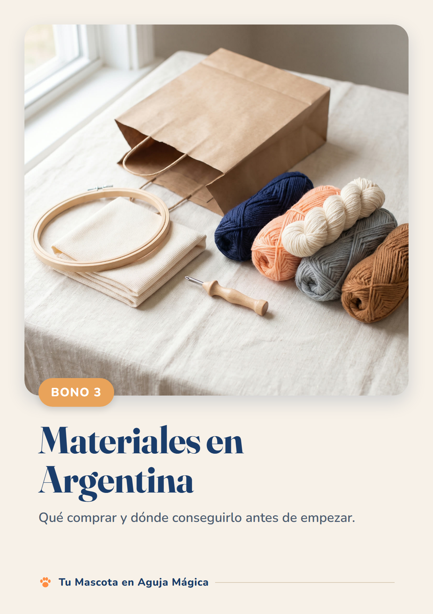
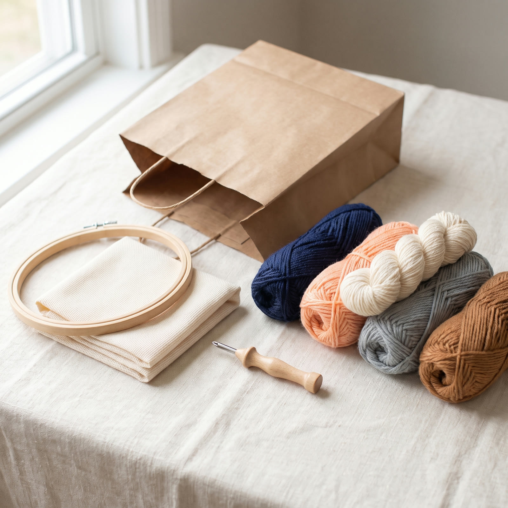

Todo se consigue en mercerías y en Mercado Libre. Estas son las palabras para buscarlo. Los precios cambian seguido: compará 2 o 3 publicaciones antes de comprar.
| Qué | Buscalo como |
|---|---|
| Kit para arrancar | "kit aguja mágica punch needle" |
| Aguja regulable | "aguja mágica regulable" |
| Tela | "tela panamá para punch needle" |
| Bastidor | "bastidor 20 cm" |
| Lanas | "lana para aguja mágica" |
| Cola vinílica | librería o ferretería |
Antes de comprar, fijate:
Para ahorrar: comprá el kit para el primer retrato y después sumá solo las lanas de los colores que te falten.
